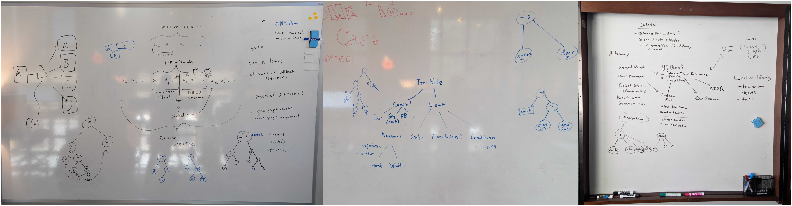
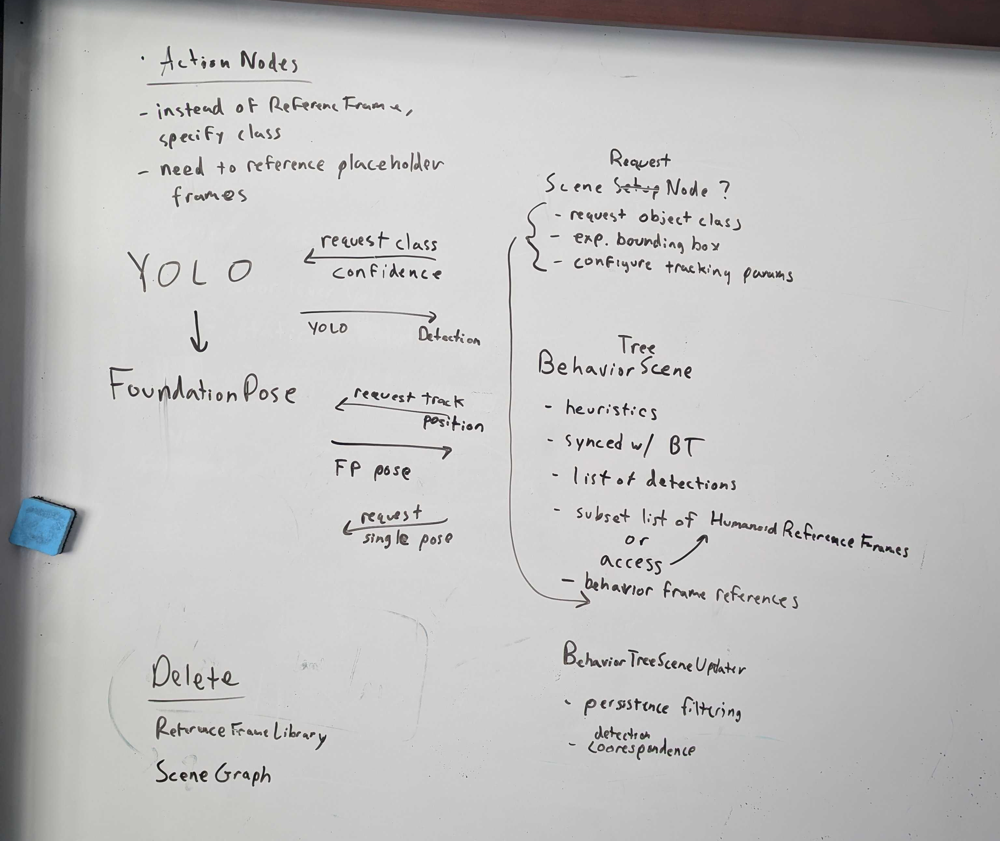
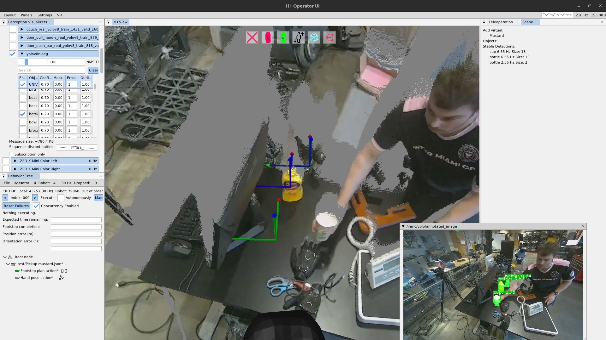
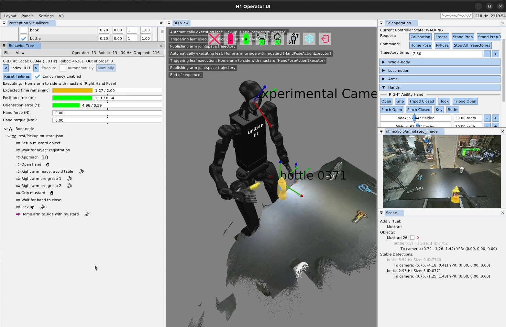
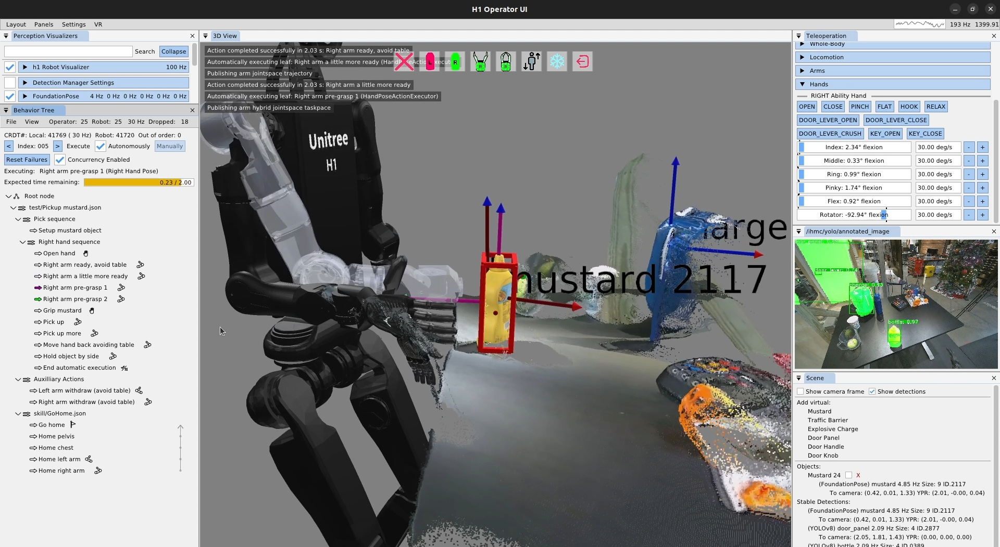
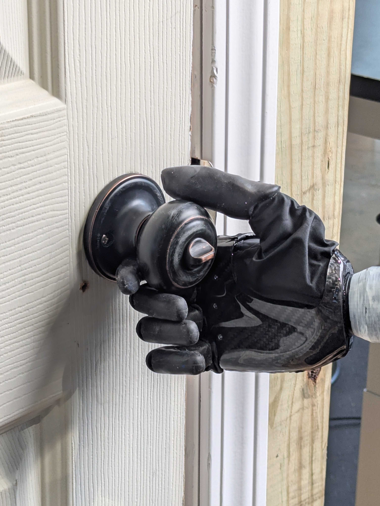
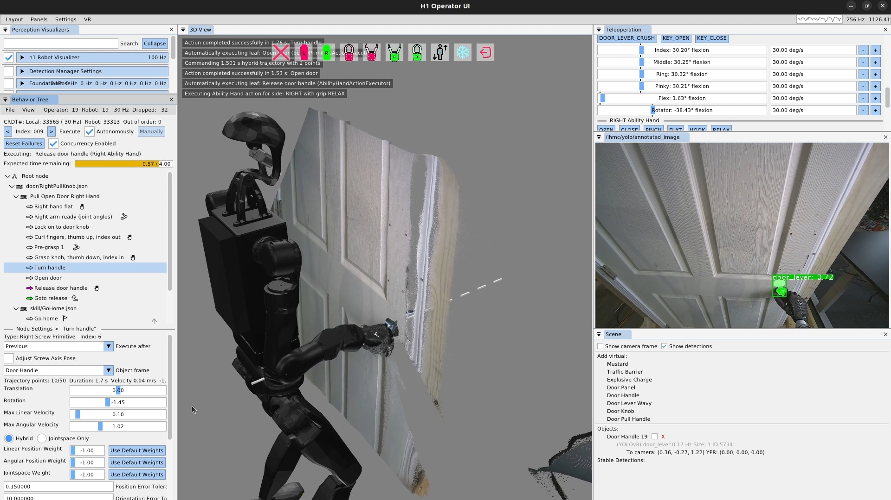
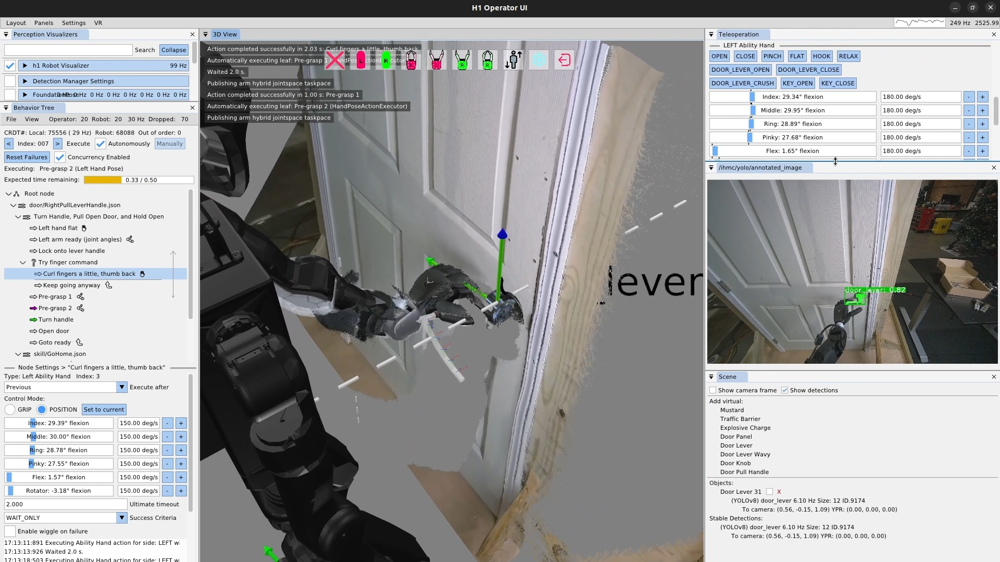
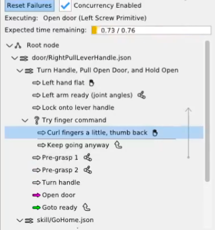

2024-2026 H1-2, 5 Fingers, Manipulation Era
AI2R and Fallback
In late 2024, we started looking into integrating our behavior tree system with external AI systems, such as Large Language Models (LLMs) and Vision Language Models (VLMs). For this, we created another heuristic control node called the AI to Robot (AI2R) node. In a similar spirit to our door traversal node, this node would contain hard-coded interfacing to external AI processes. The goal was to use LLMs and VLMs to generate behavior and make decisions. By June 2025 we had a working demo in simulation, as shown in [fig:2025_ai2r]. The goal of this demo was to receive an object from a person, stick it to the door, and retreat.
In this demo, the robot scans the area and reports the detected scene objects to the LLM, including people. The LLM is given a list of objects and poses, works out which person has the object, then tells the robot to go to the person with the object. There is also failure handling. If the robot goes to the wrong person, the one who is not holding the object, the LLM will detect this and an operator can, in natural language, correct the behavior to go to the other person. The system also supports collision avoidance. In the case a person is blocking the robot’s path, the behavior will pause and the operator can, in natural language, ask the robot to go behind the last person.
This hybrid behavior system shows that it is possible for LLMs to work in place of some classical components. However, it has not yet been shown to be faster, more reliable, or more capable than what is possible with classical methods.
Behavior Tree and Scene Graph

In late 2024 and early 2025 we had a series of design meetings focused on two major areas. The first was how to extract the reactive logic from the door traversal node into a runtime-editable version that would extend to other loco-manipulation behaviors. The second was how to resolve reliability and code architecture issues we were facing between the behavior tree and the scene graph. Whiteboards from these meetings are shown in 1.
We had been looking to Behavior Trees (BTs) 37, 52 in the literature for some time, and had used an implementation of them in the 2021 building exploration demo on Atlas, as we showed in [fig:2021_building_exploration_demo]. However, that 2021 implementation did not include runtime-editable behaviors. We wanted to figure out how to support behavior tree control nodes with our novel implementation of runtime-editable concurrent-capable action sequences. We decided to look for small, incremental modifications that made the biggest impact on reactivity.
In the above design meetings, we decided that adding a fallback node, a condition node, and a goto node would take us a long way without having to do a more significant redesign. Our idea was that our existing design of “everything is a single sequence” would still work and that the sequence implementation would monitor the fallback node, condition node, and goto node children and manage the index of the next action to execute accordingly.
In December 2024, we added a fallback node that supported concurrent actions. It has two sections: a “try” and a “catch”. It is implemented such that the first concurrent sequence in the ordered children represents the “try” and the rest represent the “catch”. The “try” can be one or more actions and the fallback node waits for them to finish. If one or more “try” actions fail, the entire “catch” sequence executes. There is no limit on the “catch” sequence length. Else, if the entire “try” is successful, the “catch” is skipped and the node after the fallback node will be executed next.
In January 2025, we added a goto node. This node simply holds a settable reference to the next node to goto. It stores this reference simply as a node name in the JSON. When executed, it sets the “next execution index” accordingly.
For a while, actions were simply placed as the “try”. In this way, if an action failed, a goto could be placed in the catch, pointing back to the try, to retry the action. For example, if a hand pose action does not achieve its goal pose within the tolerance setting, the node would fail. This already effectively made a certain amount of reactivity possible. A push door opening action could react to an unlatching failure through the “push door open” action failing to achieve the pushed open pose.
However, it would be better to perform perceptual checks than to attempt and fail physical actions. For example, when pulling a door open, a slipped grasp would not cause the hand to fail to reach its goal pose. Instead, it would be better to detect that the door did not open with the hand by observing the point cloud.
It took longer to implement a condition node that had a meaningful impact on behavior capability. In February 2025, a simple counter condition node was implemented to execute loops with iteration limits. This was ultimately not very useful.

In March 2025, we implemented an LLM condition node. It was based on the Llama 3.2 3B Instruct model with 8-bit quantization. As shown in 2, we replicated the counter condition node type with the LLM type. After experimentation, we found that the LLM’s response format varied. To create a simple binary pass/fail as required by the condition node, we structured the node as three parts: the system prompt, a repeating prompt, and a response matcher. The system prompt would be input to the model once and the repeating prompt would be input to the model each time the condition node is executed. The response matcher is implemented with a regular expression that either matches or does not match the output from the LLM. The behavior author is provided with an option for whether a match means a success or a failure of the condition node.
This worked okay, but we had trouble with such a small LLM model generating meaningful results. This development did not result in any meaningful impact on the capabilities of loco-manipulation behaviors. Our focus quickly drifted to approaches that queried paid online VLM models via the AI2R node.
For a seven month period from March to October 2025, we tried to get Vision Language Action Models (VLAs) working for task sub-components like the door opening
, but ultimately failed and gave up. Our conclusion was that at this time, VLAs were not an “off the shelf” solution and still required expertise and an “artistic” talent to get working well. However, it may have also been that we had a bug somewhere.
In October of 2025, we did some restructuring of the internals of the behavior system, making the root node reference final and accessible directly to all nodes. This allowed more direct access to behavior-wide components. For example, for all executor nodes, the controller ROS 2 node, the behavior scene, and the root node were all made final and accessible directly without needing to navigate boilerplate. This made the code a little nicer to deal with but didn’t have any meaningfull effects on operator usability or robot performance.

In late October of 2025, we finally acted on the March 3rd, 2025 design meeting, shown in 1, and had another meeting shown in 3. At this time we introduced a behavior scene that is owned by the behavior system alongside the tree, as opposed to relying on an external scene graph system. The October 21, 2025 meeting is where we solidified the concept of a scene action node. We pulled the instant and persistent detection components from the scene graph and left everything else. We referenced the detection manager that was part of the scene graph and created a condensed and revised version.
Instant detections are immutable objects created from each run of the YOLO and FoundationPose models. They contain all the information about the detection such as the semantic object class name and the timestamp. Instant detections are extended by the type of the originating detector. For example, the YOLO instant detection contains the YOLO specific information, like the region-of-interest coordinates, the confidence value, and the segmentation image mask. The FoundationPose instant detection contains the pose of the object and the 3D bounding box corners.
The YOLO instant detections also pull in and store the corresponding depth points from the ZED X Mini depth image. This feature required impressive technical wizardry from Tomasz Bialek and Dexton Anderson to maintain performance and avoid memory leaks. However, this capability of associating 3D depth data with semantic detection masks is essential to making perceptive behaviors work. The association gives a high frequency 3D position of the centroid of the detected object, which is usable to act on constrained objects like door handles and symmetrical objects like tennis balls.
Behavior Scene

Persistent detections are simply a collection of instant detections over time. An early demo is shown in 4. The new behavior scene implementation carried over a similar logical structure to the detection manager that was in the scene graph. This algorithm sorts incoming instant detections into existing persistent detections or new ones based on location. If an incoming instant detection is the same semantic class as an existing persistent detection and is close by, it is sorted into that one. If not, a new persistent detection is created. This system implements persistent object tracking which can be used to track objects for use in our frame-relative behaviors/affordance templates.
Another innovation in November of 2025 was the introduction of the scene action. Now that we had an active list of persistent detections, we needed a mechanism for the behaviors to select one and use it. We had a list of issues we didn’t know how to fix from the prior scene graph implementation. One was that persistent detections would get distorted once they got occluded, such as what happens when grasping an object. The hand starts to cover the object and the centroid of the segmentation points moves away from the hand, corrupting the prior position estimate. Another issue was in object selection. When there are multiple instances of the same class of object, which one do you choose?
Both of these issues require careful coordination with the behavior in order to solve and are context dependent. So, we decided that maybe it was best if the responsibility to handle these was just handed off to the expert operator. With that thought in mind, we decided to make the tools that made it possible for the behavior author to handle these issues. This led to the idea of an authorable scene action, which would have distinct types to do different scene related things.
To solve the object selection issue, we provide a “setup object” scene action type which, when executed, chooses the closest persistent detection of the defined semantic class and puts that persistent detection in a privileged area called the list of “objects”. This privileged list of objects is where attachments to the behavior actions are made. Any object’s pose in this list is immediately available to all behavior actions as a reference frame that can be used to define actions relative to. This implementation limits the list to contain one instance of a particular semantic class at a time so behavior actions can be defined relative to the class of object – not the specific instance of one. Another property of the “objects” list is that the persistent detection does not automatically expire. If instant detections stop coming in for it, it merely becomes stale, indicated as greyed out in the UI, but the frame is still available for the behavior actions. This is actually an important and intentional feature, as this can be used to “dead reckon” actions with respect to something you perceived before but can no longer see. For example, for door behaviors, the traversal walk through is actually defined with respect to the stale opening mechanism reference frame. We planned to have selection heuristics for the “setup object” scene action type, but haven’t yet ended up with a burning need for anything other than closest.
To solve the hand-object occlusion issue, we gave the operator a “freeze object” scene action type. This allowed a “freeze” to be performed on a scene object just before grasping it. For example, a scene object can be set up, the hand moved towards it, but not occluding it, while still tracking the object, and a freeze object action can be executed just before finally occluding the object. The freeze operation has an effect equivalent to the object becoming “stale” as described earlier. The object’s frame, similarly, can still be used for physical action definitions.
Ability Hand and Reliability

A demonstration on November 10th, 2025, showed the utility of the new behavior scene and scene action node. This was the first time we picked up an object from a table in the fully automatic mode, as shown in 5. It was also the first manipulation behavior we executed on the Unitree H1-2 76 robot we got that year. There were still lots of little bugs and issues in this demo, but nothing super theoretical. For one, our whole body controller was not great at walking with the H1-2 so the approach stance was not accurate, resulting in a low quality IK solution for reaching the mustard due to not approaching the table closely enough. A low quality IK solution with our system has always meant a high error bar on the resulting hand pose. Another of the biggest issues was that our finger control was unreliable. We ended up fixing that on the hand controller side in the coming months.

On November 19, 2025, we generalized an initial implementation of the proximity condition type, as seen in 6. In the bottom left of the screenshot, the options can be seen. The proximity condition type compares the positions of two reference frames. In the case shown, frame A is selected as “afterPelvis” (the pelvis frame) and frame B is selected as the mustard object, which we’ve instantiated and posed virtually in simulation. The distance type field selects the comparison criteria: XYZ, which compares the pure Euclidean distance, XY, which compares the distance as projected onto the XY plane, and Z, which simply compares the height of the frames. A min and max distance is specified to define the success criteria. When the condition executes, it continues executing until the criteria is met (success) or the timeout is reached (failure). The current distance is also presented in the operator interface to help with authoring. Observing the current values can help the operator reason about which min and max values are best.

Later in November, we added a visualization element for the “execute after” field for action nodes, as shown in 7. Prior to this feature, to understand the concurrency of sequences you would select each action in the list and check the “execute after” field. You could also click the little green arrows and see if the ones after it were also green, indicating that they would execute together. However, we wanted to reduce uncertainty and increase understandability of the behavior at a glance. We came up with the arrow design, seen in the figure, which starts at the defining action and extends upwards, pointing to the action specified by the “execute after” setting.
On December 1, 2025, we conducted our first behavior shakeout on IHMC’s new fully electric humanoid robot, Alex. We would soon transition behavior development fully to our new robot. The behavior shakeout consists of a sequence of open-loop walking and arm motions to test the system’s basic mechanics.

Later in December, we implemented behavior data logging in a way that is synchronized and viewable alongside whole body controller data. In this system, the behavior system process sends a periodic ROS 2 message containing a registry of behavior YoVariables, the buffered data types supported in SCS. A subscriber is set up in the whole body controller process to subscribe to these variables and inject them into the whole body controller’s registry, which then gets logged in the normal way. A screenshot of a loaded log in SCS is displayed in 8, showing the behavior variables embedded in and synchronized with the whole body controller log.

On December 11, 2025, we integrated FoundationPose 75 into the behavior scene. We used this to create an improved version of the mustard pickup task, as shown in 9. This added the capability to grasp asymmetric objects as FoundationPose detects an object’s orientation and bounding box in addition to the position. The red box in the figure shows the FoundationPose bounding box. In the bottom right, the FoundationPose scene object for the mustard can be seen. At this point we had two types of scene objects: FoundationPose and YOLOv8. Our scene was now designed to handle different types of objects abstractly and be extended easily to support more types.
This demo was still somewhat unreliable due to the low level control code of our new 5-finger Psyonic Ability Hand 80 grippers. The hands would often not respond to behavior commands and, worse, retrying the command did not work. By December 15, after trying at least five different control strategies, we fixed this issue and finger control was very smooth and reliable. The on-board Ability Hand controller wants an alpha-filtered position setpoint input that is generated from an ideal velocity-limited trajectory, as presented in [alg:ability_hand_pos_vel_limit]. This helps the hand reliably move at the desired velocity to the desired setpoint and hold the position without jittering.
(f_c \gets 1.0) (\tau \gets \frac{1}{2 \pi f_c}) (\alpha \gets \frac{\Delta t}{\tau + \Delta t})

Later in December, we added hand and finger previewing in the behavior editor, as shown in 10. This feature was designed to help the operator understand where the fingers will be during authoring. When a hand pose action is selected, the finger previews show up at the end of that arm pose. Since the pose of the arm and the configuration of the fingers are specified in separate actions and can be interwoven with other actions, this feature looks backwards in the sequence to find the most recent Ability Hand action. This action is used for the finger preview. If there is no prior Ability Hand action, the finger preview will not be shown.
This feature could probably be improved in a few ways. First, we could also show the preview when an Ability Hand action is selected, utilizing prior arm actions for the arm and hand locations. Secondly, if an arm action is selected and there are no prior Ability Hand actions, we could use the current configuration of the hand for the preview.


On December 23, 2025, using the pinch grasp shown in 11, we demonstrated a pull knob door handle opening task automatically 23 times in a row, as shown in 12. On the 24th attempt, the knob was not turned enough, and the hand slipped off on the pull. This was our first return to doors in over a year. Using now higher-confidence and more robust YOLO models for the door mechanisms in combination with the scene actions and the 5-finger Ability Hand gripper, door handle manipulation reliability has drastically increased.

On January 2, 2026, a similar demonstration with a door lever handle achieved 32 pull door openings in a row, as shown in 13. This time, the behavior was not run until failure. It was just run until we got bored. Similarly to the pull knob behavior, we think the Ability Hand being grippy and in an anthropomorphic 5-finger configuration contributed to the reliability along with the scene action and the maturation and stabilization of our behavior system as a whole.

However, this demo was not issue-free. There was some kind of bug in the hand action unrelated to hand control that was causing the action to fail. In this case, simply ignoring the failure would work to get the behavior to succeed, because this finger curling motion only slightly increased reliability, but was not necessary. We were able to use a fallback node to keep the behavior going regardless of failure, as shown in 14, marking our first use of the fallback node in a real robot behavior. The use of the fallback node helped in this case not to overcome an environmental failure, but to overcome a bug in the code, which was not a use case we expected. We learned that the fallback node was also useful for working around bugs in the system, reducing the chance that we would need to stop the robot experiment and go fix code bugs.

On January 8, 2026, the scene action was extended to fully support our full library of FoundationPose and YOLO models as shown in 15. The operator was now able to select any semantic object type from either model architecture via drop down menus. We also extended the scene object library to include heuristic objects, such as the door panel, shown here.

On January 20, 2026, we implemented that door panel heuristic scene object, as shown in 16. It uses two YOLO persistent detections, one for the handle and one for the panel, and draws a line between the centroids to identify the orientation of the panel. This is possible with the assumption that door panels swing on a vertical hinge.
References cited on this page
[37] M. Iovino, E. Scukins, J. Styrud, P. “Ogren, and C. Smith, “A survey of behavior trees in robotics and AI,” Robotics and Autonomous Systems, vol. 154, p. 104096, 2022, doi: https://doi.org/10.1016/j.robot.2022.104096.
[52] M. Colledanchise and P. “Ogren, Behavior trees in robotics and AI: An introduction. CRC Press, Taylor; Francis Group, 2018. doi: 10.1201/9780429489105.
[75] B. Wen, W. Yang, J. Kautz, and S. Birchfield, “FoundationPose: Unified 6D pose estimation and tracking of novel objects,” in Proceedings of the IEEE/CVF conference on computer vision and pattern recognition (CVPR), 2024.
[76] Unitree Robotics, “Unitree H1-2 full-size universal humanoid robot.” https://www.unitree.com/h1, 2024.
[80] A. Akhtar, J. Cornman, J. Austin, and D. Bala, “Touch feedback and contact reflexes using the PSYONIC ability hand,” in MEC symposium, 2022. doi: 10.57922/mec.1956.